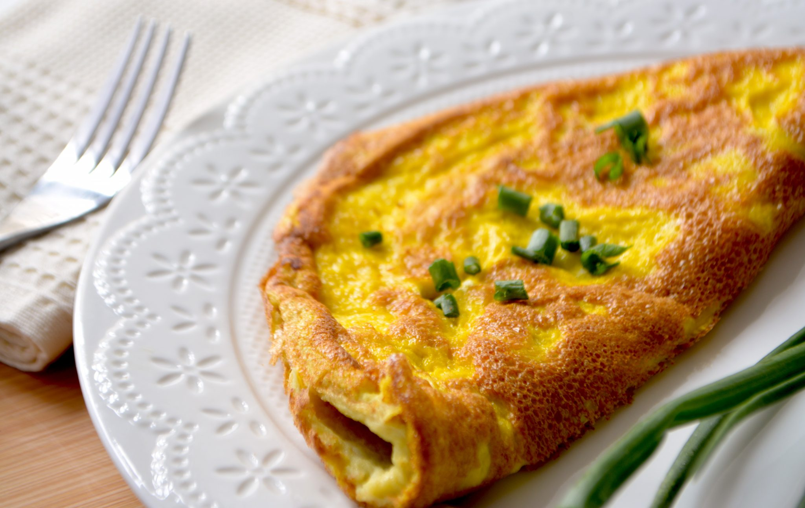

Omelette

Description
This is an omelette aux fines herbes.
Ingredients
- 3 Small Eggs (600g) or 2 x 700g eggs
- 1 Egg white - optional
- 1 Tablespoon Butter
- 1 Tablespoon Finely grated Gruyere cheese
- 1 Tablespoon Herbs - any mixture of parsley, chives, tarragon, chervil
- Salt and freshly ground black pepper
Steps
- Prepare your equipment
- Cook
- Serve